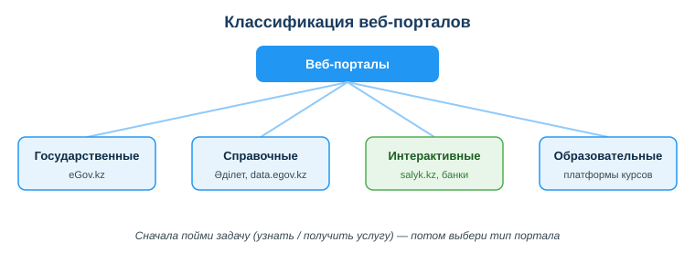
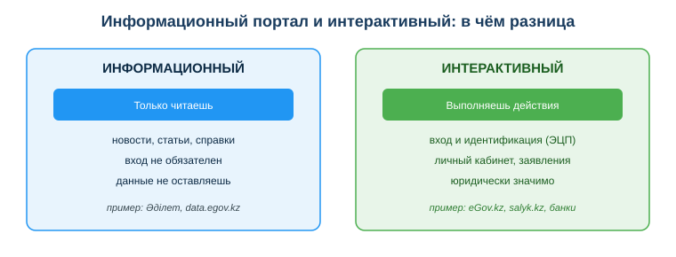

Изучить виды информационно-справочных и интерактивных веб-порталов
Практическая ситуация
Тебе нужно срочно узнать, какой закон РК регулирует электронную цифровую подпись. Ты открываешь eGov.kz, начинаешь искать услугу, путаешься в разделах личного кабинета — и теряешь время. А ответ был в двух кликах на другом портале, где просто читают текст закона.
В день ты заходишь на десятки сайтов, но это разные по сути вещи: где-то ты только читаешь, где-то получаешь справку, а где-то совершаешь действия с реальными последствиями — подаёшь заявление или платишь. От типа портала зависит, что ты можешь там сделать, какие данные оставляешь и насколько надо быть осторожным.

Что ты научишься делать
- различать информационные, справочные и интерактивные порталы;
- выбирать портал, который решает именно твою задачу;
- распознавать интерактивные порталы и связанные с ними риски;
- проверять, что ты на официальном сайте, прежде чем вводить данные.
Почему это важно
Почти любая рабочая и бытовая задача сегодня решается через веб-портал: получить справку, оплатить налог, найти нормативный акт, подать заявление. Если путать типы порталов, теряешь время и можешь оставить данные не там, где нужно.
Связь с профессией: разработчик постоянно работает с веб-сервисами — и как пользователь, и как создатель. Понимая, чем информационный портал отличается от интерактивного, ты будешь грамотнее проектировать интерфейсы, формы входа и сценарии, где у действия есть последствия (платёж, отправка заявки).
Учимся читать схему
Посмотри на классификацию веб-порталов выше. Ответь на вопросы:
- какие четыре группы порталов показаны на схеме?
- к какой группе относится eGov.kz, а к какой — Әділет?
- что схема советует сделать ПЕРВЫМ — выбрать портал или понять задачу?
Главное понятие
Веб-портал — крупный сайт-точка входа, который объединяет информацию и сервисы по одной теме. По характеру работы пользователя порталы делят на информационные (только читаешь), информационно-справочные (ищешь и получаешь данные) и интерактивные (совершаешь действия с последствиями).
Проще: на одном портале ты получаешь информацию, на другом — выполняешь действие. Это и есть главная граница, которую нужно видеть.
Три типа порталов
| Тип | Что делает пользователь | Примеры (РК) |
|---|
| Информационный | читает контент, новости | сайты СМИ, гос. органов |
| Информационно-справочный | ищет и получает справки/данные | Әділет (НПА), data.egov.kz, nelk.kz |
| Интерактивный (сервисный) | совершает действия, получает услуги | eGov.kz, salyk.kz, eLicense.kz, банки |
Главное различие: на интерактивном портале ты что-то делаешь (подаёшь заявление, платишь, подписываешь) — и это имеет последствия. На информационном и справочном ты только получаешь сведения.

Признаки интерактивного портала
- требуется вход и идентификация (логин, ЭЦП);
- есть личный кабинет;
- действия юридически значимы (заявления, платежи);
- хранятся твои персональные данные.
Если хотя бы половина этих признаков есть — перед тобой интерактивный портал, и относиться к нему нужно внимательнее.
Мини-кейс
Студенту нужно узнать, какой закон регулирует ЭЦП. Он идёт на eGov оформлять услугу — но это не та задача. Правильный портал — справочно-правовая система (Әділет). Следующий шаг: сначала определить тип задачи (узнать / получить услугу), потом выбрать портал.
Разбор типичной ошибки
Ошибка. Искать справочную информацию там, где оформляют услуги (например, текст закона — в личном кабинете банка), и наоборот.
Почему это ошибка. Ты тратишь время на портале не того типа, не находишь нужного и можешь по привычке ввести данные там, где это не требуется.
Как правильно. Сначала определи тип задачи (узнать информацию или получить услугу), а потом подбери портал под этот тип. И всегда проверяй домен официального сервиса перед вводом ЭЦП.
Практика
Ответь письменно:
- Распредели по типам (информационный / справочный / интерактивный): новостной сайт, Әділет, eGov.kz, интернет-банк, data.egov.kz.
- Назови минимум 3 признака, по которым понятно, что портал интерактивный.
Образец (часть ответа на пункт 1): «Новостной сайт — информационный (только читаешь); Әділет и data.egov.kz — информационно-справочные (ищешь и получаешь данные); eGov.kz и интернет-банк — интерактивные (совершаешь действия с последствиями)».
Самопроверка
- Я умею различать информационные, справочные и интерактивные порталы.
- Я знаю признаки интерактивного портала (вход, личный кабинет, юридически значимые действия, персональные данные).
- Я понимаю, почему сначала надо определить задачу, а потом выбирать портал.
Подумай
- Какими порталами ты пользовался за последнюю неделю и к каким типам они относятся?
- Почему на интерактивном портале риск выше, чем на информационном, — что именно ты там оставляешь и совершаешь?
Итог
Что теперь делать:
- различай информационные, справочные и интерактивные порталы;
- сначала пойми задачу (узнать / получить услугу), потом выбирай портал;
- на интерактивных порталах будь внимателен: там данные и юридически значимые действия;
- всегда проверяй домен официального сервиса перед входом.
Полезные ссылки
Источник: ГОСО ТиПО (рамки результатов обучения); официальные порталы Республики Казахстан (eGov.kz, Әділет, data.egov.kz).
Разработал: преподаватель ИКТ, магистр управления и информационной безопасности Калиаскаров Д.А.
Материал разработан рабочей группой ТОО «Колледж Хекслет Казахстан» и одобрен к использованию в обучении решением Педагогического совета.